Washington Breath-Test Trends Through 2026
De-duplicated breath-test observations, 1995-2026
Executive Summary
- Testing volume rose through the late 1990s, stayed high through the 2000s, and then declined. The 2018-2019 overlap has been removed before constructing these series.
- Breath-test observations rise sharply at age 21. The pattern appears at daily, weekly, and 28-day resolutions in the two years around the 21st birthday.
- The age-21 discontinuity is smaller after July 2014. A local-linear comparison within 90 days of age 21 estimates a 44.5% increase before the policy break and a 36.4% increase afterward. This is preliminary descriptive evidence consistent with substitution, not a causal estimate.
Aggregate Breath-Test Patterns
These figures use de-duplicated observations from 1995 through 2026. They describe tests, not the population rate of impaired driving.


Observations Relative to Turning 21
Each plot places a test by the number of days from the tested person's 21st birthday. The daily figure shows raw day-level counts; the other two smooth the same pattern into complete 7-day and 28-day bins. Partial outer bins are excluded.
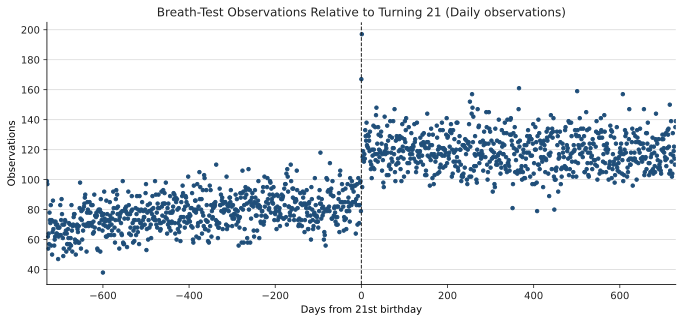
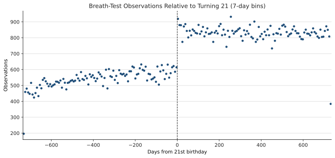
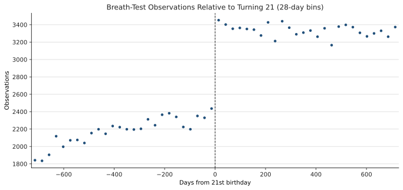
Age-21 Count Sensitivity
The same age-21 count design is repeated after excluding zero BAC readings and then within tests with a recorded collision. These restrictions address the sharp rise in exact-zero BAC records over time and provide a smaller, potentially more consistently recorded comparison sample. Each plot uses its own vertical scale.
BAC > 0
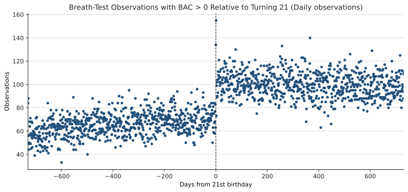
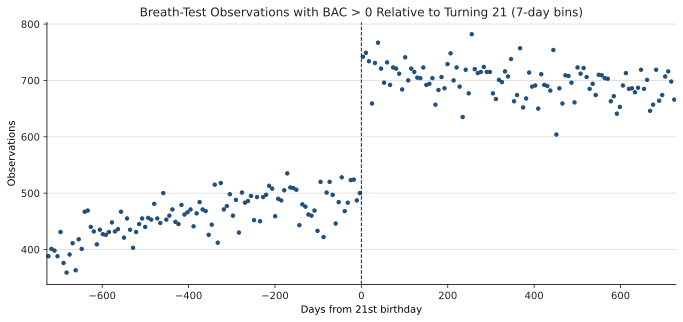
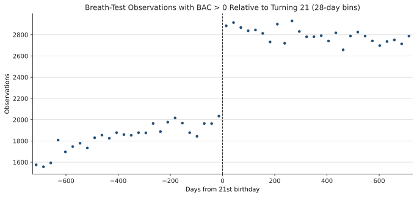
Recorded collision
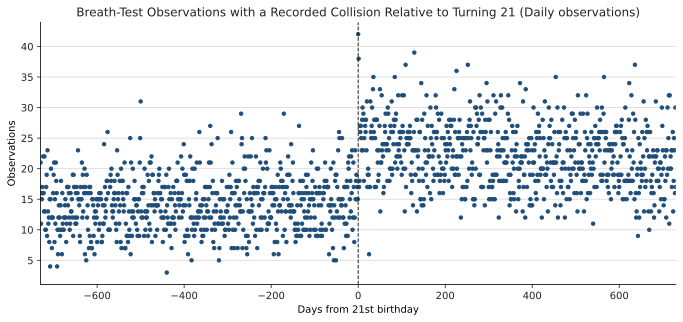
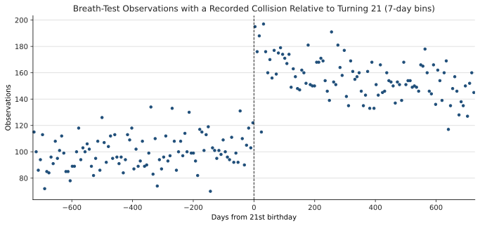
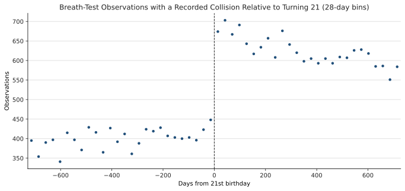
Age-21 Pattern Before and After Legal Cannabis Sales
The pre-period runs from January 1999 through June 2014. The post-period begins in July 2014 and runs through the latest record. Within each pair, the two plots share the same y-axis scale; scales differ across bin widths because the observations are aggregated differently.
Daily observations
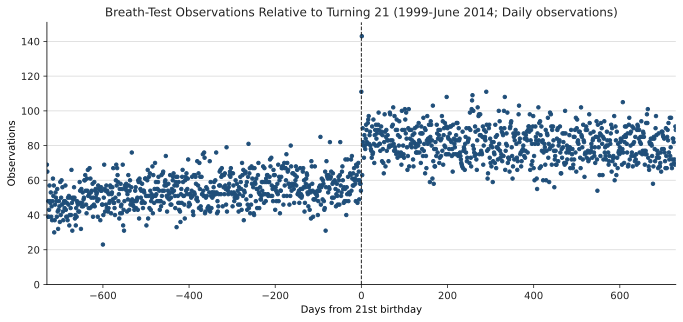
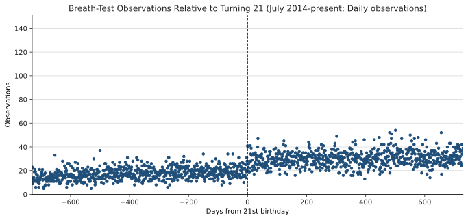
7-day bins
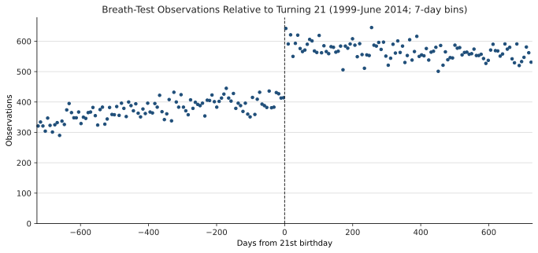
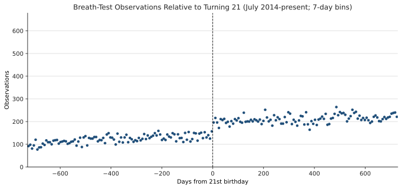
28-day bins
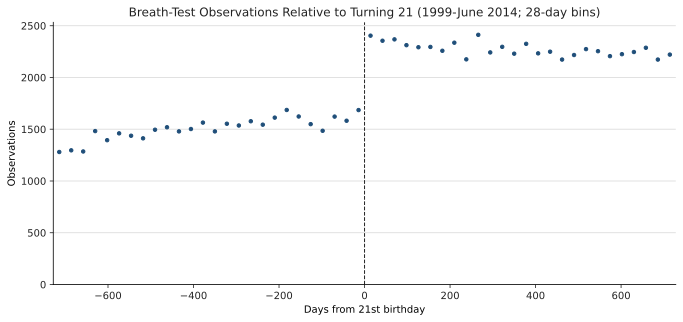
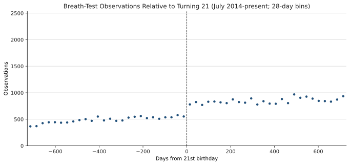
The difference in age-21 discontinuities is consistent with some substitution away from alcohol when legal cannabis access begins at the same threshold. Because these are breath-test observations, the comparison remains preliminary and should be checked with placebo age cutoffs, broader national policy variation, and outcomes outside breath-test enforcement.